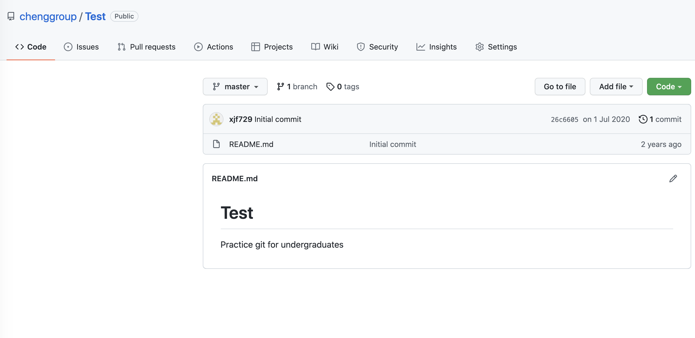
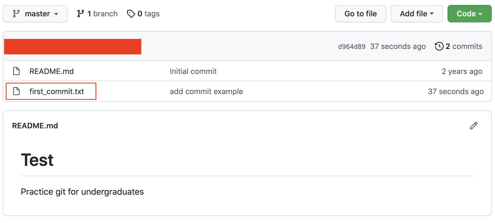
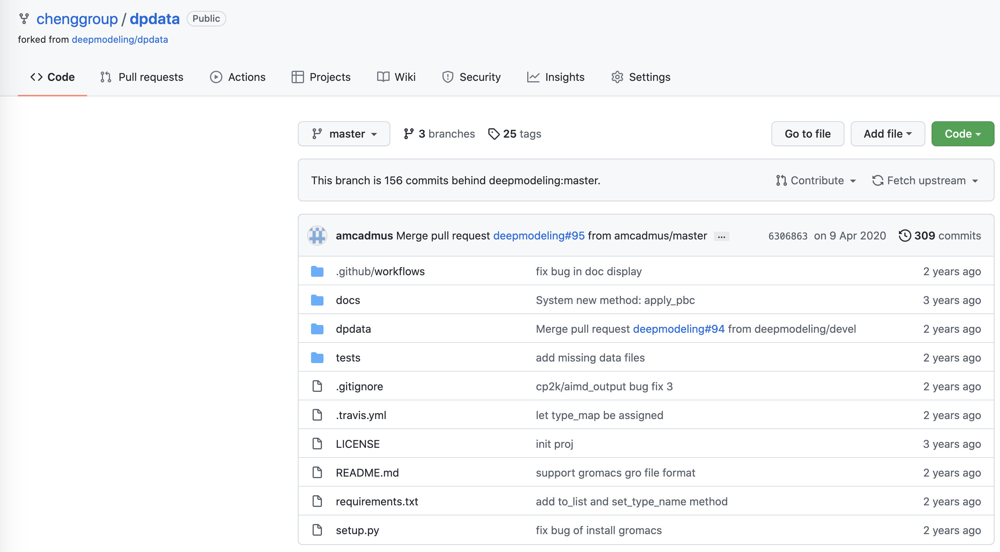
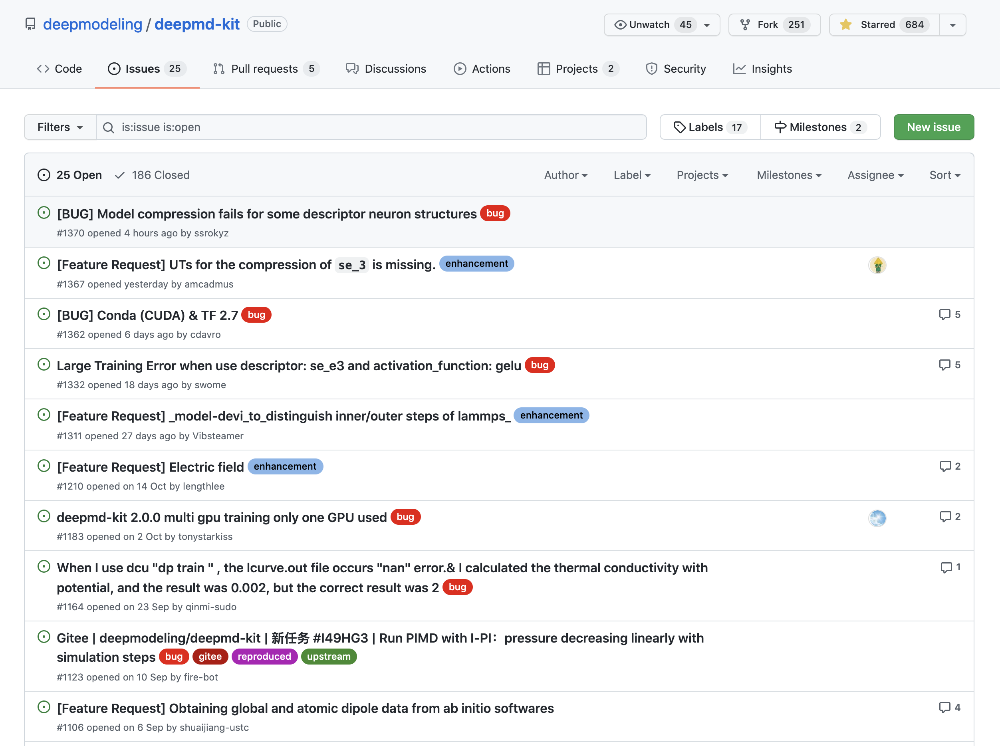

Git 基本使用教程¶
Git是目前世界上最先进的分布式版本控制系统（没有之一）—— 廖雪峰
版本控制系统可以帮助用户快速识别、整理项目的修改等，避免出现诸如 "新建文本文件_by浩二-第19版_修改190810-v114.514 - 副本(9).txt" 等令人血压上升、呕吐不止的情况。
Git作为开源社区常用的版本控制系统，有着强大的功能，可以帮助用户管理以文本（如代码等）为主的项目。当然对二进制文件，例如docx、pptx等，Git的支持尚不够完善，加上服务器众所周知的原因，因而不建议把Github当成网盘使用。
目前组内有关机器学习、自动化的工作逐渐增多，需要代码共享和协同的场合逐渐增加。另一方面，基于 LaTeX 等标记语言的论文写作，其其实质上对也是文本文件的处理。但鉴于 Git 的入门和使用尚有一定门槛，需要一些基础命令的入门。因而写下这篇文字，整理一些常用的Git操作，限于篇幅和水平，可能会有一些缺漏，还请指正。
本文将长期更新，不定期收录一些小故事小Trick。
项目创建¶
基于 Github 创建项目¶
首先注册 Github 账号，这里不作赘述。
提示
若正在阅读本文的读者是在校师生，可通过 Github 官方渠道 申请成为校园专业用户（Campus Expert），从而可以免费使用（白嫖）专业版特性，并享受一系列优惠（包括Pycharm专业版等，详见官网介绍）。当然这不影响我们后文的操作，读者可以稍后申请。注意申请的IP需要位于校园网环境内，并且最好保证IP定位在校区范围内以免出现错误识别导致申请失败。例如厦门大学曾呈奎楼不位于Github认可的校区范围内，请最好到化学楼、卢嘉锡楼、图书馆等地申请。申请时可能需要提供学校邮箱、学生卡照片信息等，请按照相应提示操作。
完成注册到达首页，便可以看到如图的按钮，点击"New"即可创建一个仓库（Repository）。

随后便出现如下图的界面，可以选择设置该仓库的归属（Owner）、名称（Repository name）、说明（Description）、权限等。需要说明的是，公共仓库（Public）的内容任何人都能看到，但提交（Push）需要设置权限；而私有仓库（Private）的访问权限取决于归属者，若为个人仓库默认仅自己可见，若为组织（Organization）则仅该组织成员可见。

尽管直接点击“Create repository”我们便可以快速创建一个仓库，这里推荐根据情况选择是否要创建说明文档（README file）、忽略信息（.gitignore）以及开源协议（License）。关于开源协议的说明，请点击"Learn more"，这里限于篇幅原因不过多描述。
需要说明的是.gitignore，如图所示，可以看到 Github 提供了多种模板供选择，例如需要创建的项目以Python代码为主，则可以选择Python。则仓库创建后，Git将不再追踪文件夹下可能存在的日志文件、预编译文件（如.pyc）、Jupyter Notebook缓存等，这对于保持工作区和修改信息的清晰有很大帮助。当然，这里的模板可能无法包含所有需求，故也可以先创建仓库再添加。
为了合作的快捷、防止在提交时把过多无用文件提交到Git仓库中，强烈推荐在项目创建之初就建立.gitignore文件。后文将更加详细地介绍这一文件的用法。

远程↔︎本地¶
在Github上创建项目后，下一个关心的议题自然是，如何把本地的代码上传到远程。

相信不少人已经对上图中的按钮 "Add file" 跃跃欲试了，点击即可看到两个选项，即创建文件和上传文件。前者可以提供一个文本框输入你想要建立的文字，后者则提供了一个区域可以通过浏览器拖动文件手动上传或者打开资源管理器选择要上传的文件。但当文件较多、较大时，这两种方法便显得不够便捷。因此这里我们从 Git 命令行出发，介绍更常用的提交方式。
实际上 Github 仅仅是世界最大的 Git 远程项目管理平台，Git 本身则不依赖于 Github 存在，因此我们在本地即可追踪文件的修改，进行版本控制。Git在本地的安装非常简单，用户可以参照廖雪峰老师的教程进行。在安装的最后，用户需要设置自己的信息，即用户名和密码。为了使在远程的用户信息和本地保持一致，通常与Github的用户名和注册邮箱保持一致。
git config --global user.name "Your Name"
git config --global user.email "email@example.com"
注意git config命令的--global参数，用了这个参数，表示你这台机器上所有的Git仓库都会使用这个配置，当然也可以对某个仓库指定不同的用户名和Email地址，即去掉--global。
在远程创建仓库后，我们便可以把远程的仓库拉取（Pull）到本地。点击绿色的Code按钮，即可看到如图的对话框，点击文本框右侧的按钮复制链接。

若在本地某个目录下，输入如下命令：
git clone https://github.com/chenggroup/Test.git
即可将远程仓库拉取到本地，并创建一个Test目录用于存放文件。
先别急着输入上面的命令。由于安全性原因，Github官方从2021年8月起关闭了通过HTTPS协议直接上传提交的功能，因此要想从本地向远程上传提交，需要使用SSH协议，因此我们需要进行额外配置，请参考廖雪峰老师的教程操作。
配置完成后，即可用SSH面板里的链接来克隆（Clone）远程仓库到本地：

git clone git@github.com:chenggroup/Test.git
注意 git clone 后的链接要修改为你复制的链接。
随后 cd Test 进入本地仓库，便可以对本地仓库进行编辑。这里我们用Vim创建一个文件，为演示操作方便，文件名假设是first_commit.txt：
vim first_commit.txt
在文件中进行一些编辑，例如输入：
test
2021
first commit
如果尚不熟悉 Vim 的操作，请参考 Linux入门。
保存并退出，输入git status，可以看到已经监测到尚未提交的更改：
$ git status
On branch master
Your branch is up to date with 'origin/master'.
Untracked files:
(use "git add <file>..." to include in what will be committed)
first_commit.txt
nothing added to commit but untracked files present (use "git add" to track)
注意这里提到，我们正处于master分支上，并与远程的origin/master分支保持一致。输入
git add .
即可将当前目录下修改的文件添加到暂存区，可供提交。因此输入：
git commit -m "some description"
即可生成一个提交，包含了上述文件的修改。这里some description可以参照自己的编辑进行修改。
但上述步骤仅仅是提交到本地的Git仓库，要想和远程同步，则需要：
git push origin
将本地的更改提交到远程对应的分支，即上述的origin/master，输出如下：
$ git push origin
Enumerating objects: 4, done.
Counting objects: 100% (4/4), done.
Delta compression using up to 4 threads
Compressing objects: 100% (2/2), done.
Writing objects: 100% (3/3), 309 bytes | 309.00 KiB/s, done.
Total 3 (delta 0), reused 0 (delta 0)
To github.com:chenggroup/Test.git
26c6605..d964d89 master -> master
回到远程页面就会发现，我们已经提交成功。

点击进入，内容和本地一致：

从而我们可以把本地仓库的修改同步到远程。在git commit之前，实际上任何修改都可以添加到暂存区中，但这里需要注意可以被Track的文件是否是自己想要的，而不要无脑git add .甚至git add *，以免追踪到一些“不速之客”。
项目维护¶
分支¶
如果项目本身内容较多，且由多个人维护，将所有提交都放到同一条时间线上，就会形成非常长的修改，不利于每个人追踪自己的修改。并且有时会希望在重构的同时，保持主线完整性。这一需求可由Git轻松解决。
Git支持创建分支（Branch），即可以从主线分支出一个独立的Branch，并在该Branch修改，通过后再合并（Merge）到主线上。这样，便可以在不干涉主线的情况对分支进行维护和修改。并且每个人都可以创建自己的独立分支，从而避免各自的修改之间出现冲突，导致混乱。
切换分支的命令如下：
git checkout -b devel
若本地之前不存在devel分支，则可由当前分支出发创建一个。这样的实现方式就如同从当前地铁站换乘到另一条地铁线路，再继续乘坐。之后的所有修改便体现在devel分支上。
当修改的代码测试完善，我们便可以把支线代码合并到主线上，即在换乘线路的地铁站修建一个换乘站，与主线换乘，并保留之前的所有修改。命令如下：
git checkout master
git merge devel
关于分支管理，更详细的介绍，可以参考廖雪峰的教程。
拉取请求（Pull Request）¶
类似于分支的实现，对公开在Github上的远程项目，可以由当前项目出发，建立项目的复刻（Fork）。复刻出的项目可以看作是主项目的分支，并保留了初始项目的相应分支。

Fork的项目仍是远程项目，因而可以Clone到本地作进一步修改，并可以与本地同步从而更新远程的Fork项目，而原始项目保持不变（并且很可能也没权限改变）。
此时，要想向原始项目提交自己的修改，则需要创建拉取请求（Pull request，简写为PR）。点击页面上的"Contribute"，点击"Open pull request"即可创建PR。

随后，便可以指定从Fork项目的某个分支提交PR到原始项目的某个分支。例如图中是从自己的devel到原始的master分支。在下方的文本框中可以输入自己的修改及对应的描述，便于原始项目的维护者审核、处理、合并PR。

页面向下翻，可以看到自己的历史提交，以及修改的文件等。注意在创建PR前，请务必查看本次PR相比原始文件修改了哪些，以免一些不希望上传的内容混进来，给审核人员带来困扰，不利于抓住真正核心的修改。、
提交PR以后，审核人员可能会提出一些建议，甚至是修改意见。若提交到对应的复刻分支，则相应的修改也会同步到PR中，因此不需要额外提交修改请求。
创建议题（Issue）¶
当发现代码可能存在BUG或者自己有一些疑问需要维护者回答时，抑或是有一些想要开发者实现的新功能，用户也可以在原始项目中创建议题（Issue），用尽可能简洁的语言描述自己遇到的问题，或自己的需求。一些流行的项目可能会提供Issue模板，请按照模板提示填写，提高解决问题的效率，方便开发者对应修复BUG或者开发特性。

如果你看到相关的Issue，而恰好你的修改可以为之提供帮助，也可以提交PR，并在PR的描述中用#<ID>连接到对应的Issue，便于提问者同步你的修改。
.gitignore 文件¶
开发者常常需要在项目文件夹下调试，而论文撰稿人常常需要编译 LaTex 项目产生 PDF 供预览。这些过程，都可能产生一些日志、缓存、输出等文件，一些甚至是二进制文件。在默认情况下，Git 会监测项目目录下的所有文件，如果git add .，则会全部加入到暂存区。若在git commit时仍未发现问题，这些文件就会一并被仓库追踪。当上传到远程仓库，有权限查看这些项目的人便会在Github或者其他地方看到这些文件，血压可能会无法抑制地急速上升……
为了避免这种情况，便需要有办法拒绝追踪这些文件。Git提供的解决方案便是创建一个.gitignore文件，记录这些希望被忽略的文件或目录。其格式如下所示，即把希望忽略或者排除的文件加入其中。
# 排除特定文件
text.txt
# 排除tmp下的所有文件
tmp/*
# 排除所有.开头的隐藏文件
.*
# 排除所有.class文件
*.class
# 不排除.gitignore和App.class
!.gitignore
!App.class
可以想像，如果所有规则都手动编写，对于维护者可能会有困扰。因此，Github上亦有维护一个.gitignore文件的仓库（github/gitignore: A collection of useful .gitignore templates），用户只需要根据自己的需求从中选取相应的忽略信息，加入到本地的.gitignore即可。注意，该仓库的根目录下放置的是一些常用语言环境，而一些编辑器或IDE同样会产生缓存文件，这些模板见于global下。实际上，从Github创建的仓库便是从这个仓库中拉取.gitignore的模板。
但是，很多意识到自己需要.gitignore的用户往往是经历了血压的上升，想要亡羊补牢的。即已经把诸如日志文件一类的文件提交到远程仓库中，甚至在clone时才发现问题。一个比较快速的解决方案便是，在建立.gitignore后，直接运行：
git rm -r --cached .
git add .
相当于从头开始，直接将不希望继续track的文件标记为删除，从而在提交上彻底忽略这些文件的存在，但同时不删除原始文件。但这些文件的记录仍存在于远程。
另一种思路则是利用git update-index --assume-unchanged <file>命令，忽略掉该文件的更改，但仍保留了文件本身。总之，这两种方法都无法从根本上解决已经提交到远程的文件，因此还是推荐在git init之初就写好.gitignore，或利用 Github 自带的模板。